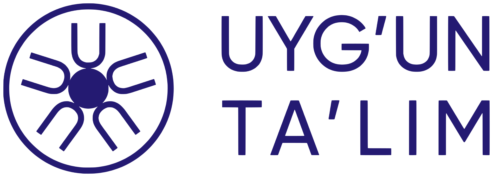

«Uyg'un ta'lim» ijtimoiy-iqtisodiy infratuzilmasi
Akkauntni o'chirish
«Uyg'un ta'lim» mobil ilovasi foydalanuvchilari uchun
Ushbu sahifa orqali «Uyg'un ta'lim» ilovasida (dasturchi: «UYG'UN TA'LIM» MCHJ) ochilgan akkauntingizni va unga bog'liq ma'lumotlarni o'chirishni so'rashingiz mumkin. Buning uchun ilova telefoningizda o'rnatilgan bo'lishi shart emas.
Akkauntni o'chirishni so'rash tartibi
- Ilovada ro'yxatdan o'tgan elektron pochtangizdan info@uyguntalim.uz manziliga xat yuboring.
- Xat mavzusiga «Akkauntni o'chirish» deb yozing.
- So'rov 7 ish kuni ichida bajariladi va natija haqida pochtangizga javob yuboriladi.
Nimalar o'chiriladi
- akkaunt — familiya, ism, otasining ismi, elektron pochta va parol;
- darslar va testlar bo'yicha progress;
- berilgan roziliklar yozuvi.
Nimalar saqlanib qolishi mumkin
- berilgan sertifikat yozuvi — sertifikat raqamining haqiqiyligini tekshirish imkoni saqlanishi uchun. Xohishingizga ko'ra bu yozuv ham o'chiriladi — buni xatda ko'rsating;
- to'lovlarga oid buxgalteriya hujjatlari — qonunchilik talabiga ko'ra, belgilangan saqlash muddati davomida.
Savollar uchun: info@uyguntalim.uz · Qo'shimcha ma'lumot: Maxfiylik siyosati